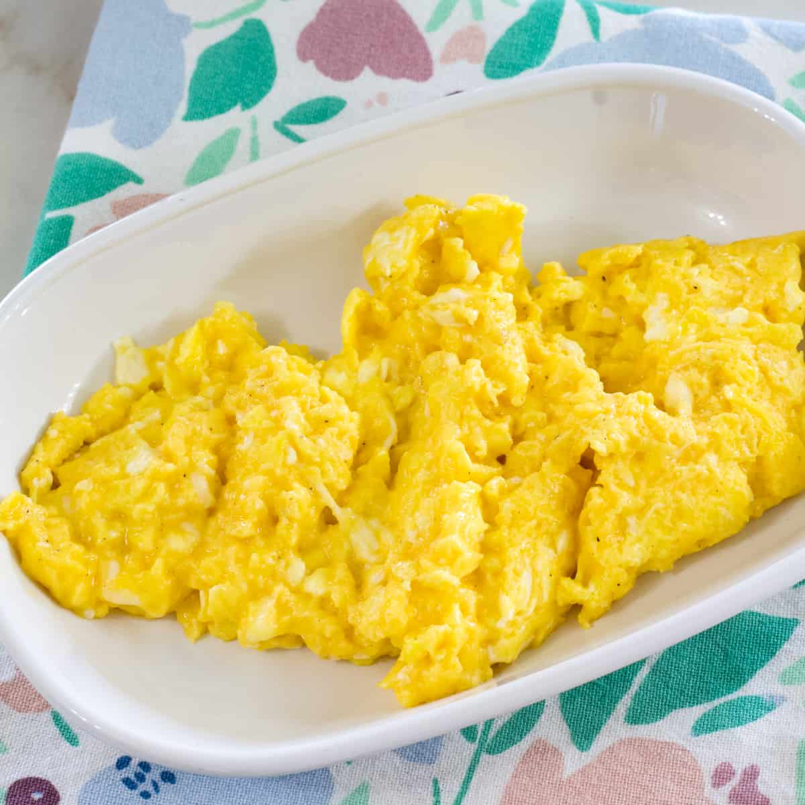

Cheesy Scrambled Egss

Cheesy eggs is an excellent breakfast for any occassion. Eggs are filled with protein, and cheese is just plain tasty, a match made in heaven.
Ingredients
- Eggs 1-4 dependings on your appetite. Maybe even more, don't let me tell you how many eggs to eat.
- Cheese - any kind, thick shredded
- milk(optional) 1tbsp
- Salt
- Pepper
- Butter
Directions
- Break eggs into mixing bowl
- If you like them fluffy, add some milk
- whisk with fork
- Add mixture to hot buttered pain
- Add salt and pepper to taste
- Add cheese, as much as you want, go crazy
- Using a silcon spatula, scramble them eggs to your desired consistency, I like a rough scramble personally.
- When properly scrambled and cooked(about 2 minutes, variable based on your pan heat), plate and enjoy!